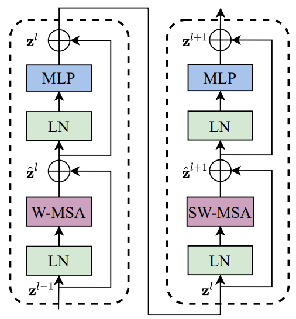
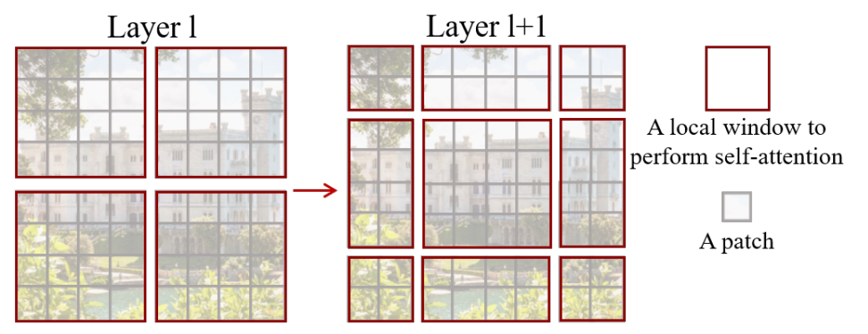
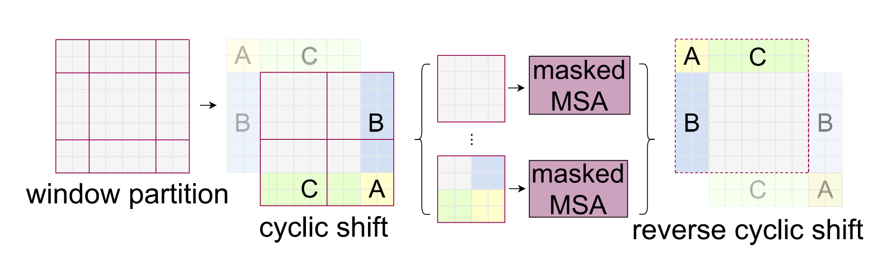

1 Personal Update
For someone who was actively releasing blogs almost all throughout 2020 & 2021, I am kinda sad to admit that this is my first blog for the year 2022. But, at the same time, I am super excited to be back. My personal responsibilities took priority for the last 1 year and I had to give up on releasing blog posts. Now that the storm has settled, I am happy to be back.
I also resigned from my position as Machine Learning Engineer from Weights and Biases (W&B) earlier this year and have joined REA Group as Data Science Lead. It’s quite a big change in my day to day work life, but I am up for the challenge and enjoying every second of my new job so far. :)
I wrote many blogs on various different research papers during my time at W&B that can be found here.
A lot has changed in the past 1 year or so since I have been away. As I catch-up with the latest research, I hope to continue releasing more blog posts fortnightly and take you on this journey with me as well. Let’s learn together!
2 Prerequisites
As part of this blog post I am going to assume that the reader has a basic understanding of CNNs and the Transformer architecture.
Here are a couple good resources on the Transformer architecture if you’d like some revision: 1. The Annotated Transformer 2. Vision Transformer (ViT)
For CNNs, there are various architectures that have been introduced. I have previously written blogs about a few of them: 1. Squeeze and Excitation Networks 2. DenseNet 3. EfficientNet: Rethinking Model Scaling for Convolutional Neural Networks
3 Introduction
As part of today’s blog post, I want to cover Swin Transformers. As is usual for my blog posts, I will be covering every related concept in theory along with a working PyTorch implementation of the architecture from TIMM. Also, all text presented in this blog post copied directly from the paper will be in Italics.
Note: At the time of writing this blog post, we already have a Swin Transformer V2 architecture. This architecture will be covered in a future blog post.
While the Transformer architecture before this paper had proved to be performing better than CNNs on the ImageNet dataset, it was yet to be utilised as a general purpose backbone for other tasks such as object detection & semantic segmentation. This paper solves that problem and Swin Transformers can capably serve as general purpose backbones for computer vision.
From the Abstract of the paper:
Swin Transformer is compatible for a broad range of vision tasks, including image classification (87.3 top-1 accuracy on ImageNet-1K) and dense prediction tasks such as object detection (58.7 box AP and 51.1 mask AP on COCO testdev) and semantic segmentation (53.5 mIoU on ADE20K val). Its performance surpasses the previous state-of-the art by a large margin of +2.7 box AP and +2.6 mask AP on COCO, and +3.2 mIoU on ADE20K, demonstrating the potential of Transformer-based models as vision backbones. The hierarchical design and the shifted window approach also prove beneficial for all-MLP architectures.
4 Key Concepts/Ideas
I might be oversimplifying here, but in my head there are only two new key concepts that we need to understand on top of ViT to get a complete grasp of the Swin Transformer architecture.
Everything else to me looks pretty much the same as ViT (with some minor modifications). So, what are the two concepts? We will get to them later in this blog post.
First, let’s get a high level overview of the architecture.
5 Swin Transformer Overview

From section 3.1 of the paper:
An overview of the Swin Transformer architecture is presented in the Figure above, which illustrates the tiny version (SwinT). It first splits an input RGB image into non-overlapping patches by a patch splitting module, like ViT. Each patch is treated as a “token” and its feature is set as a concatenation of the raw pixel RGB values. In our implementation, we use a patch size of 4 × 4 and thus the feature dimension of each patch is 4 × 4 × 3 = 48. A linear embedding layer is applied on this raw-valued feature to project it to an arbitrary dimension (denoted as C).
5.1 Patch Partition/Embedding
So first step is to take in an input image and convert it to Patch Embeddings. This is the exact same as ViT with the difference being that each patch size in Swin Transformer is 4x4 instead of 16x16 as in ViT. I have previously explained Patch Embeddings here and therefore won’t be going into detail here.
from timm.models.layers import PatchEmbed
x = torch.randn(1, 3, 224, 224)
patch_embed = PatchEmbed(img_size=224, patch_size=4, embed_dim=96)
patch_embed(x).shape
>> torch.Size([1, 3136, 96])As can be seen, that the output of the Patch Embedding layer is of shape \((1, 3136, 96)\), that is, \((1, (H/4, W/4), 96)\) where 96 is the embedding dimension C.
NOTE: The embedding dimension 96 for Swin-T (architecture covered as part of this blog post) has been mentioned in section 3.3 of the paper under Architecture Variants.
5.2 Swin Transformer Stages Overview
Continuing from section 3.1 of the paper:
Several Transformer blocks with modified self-attention computation (Swin Transformer blocks) are applied to these patch tokens. The Transformer blocks maintain the number of tokens H/4 × W/4, and together with the linear embedding are referred to as “Stage 1”. To produce a hierarchical representation, the number of tokens is reduced by patch merging layers as the network gets deeper. The first block of patch merging and feature transformation is denoted as “Stage 2”. The procedure is repeated twice, as “Stage 3” and “Stage 4”
stage_1 = BasicLayer(dim=96, out_dim=192,
input_resolution=(56, 56),
depth=2)
inp = torch.randn(1, 56*56, 96)
stage_1(inp).shape
>> torch.Size([1, 3136, 96])As can be seen from the code snippet above, there is no change in the dimension of the input as it passes through “Stage-1”. In fact, the dimension of the inputs doesn’t change as it passes through every stage. It is in between stages, that a Patch Merging layer is applied to reduce the number of tokens as the network get’s deeper.
5.3 Patch Merging Layer
From section 3.1 of the paper:
The first patch merging layer concatenates the features of each group of 2×2 neighboring patches, and applies a linear layer on the 4C - dimensional concatenated features. This reduces the number of tokens by a multiple of 2×2 = 4 (2× downsampling of resolution), and the output dimension is set to 2C.
Here, \(C\) is the number of channels (embedding dimension). For the tiny version that has been explained as part of this blog post, \(C=96\).

As can be seen below, the Patch-Merging layer merges four patches. So with every merge, both height and width of the image are further reduced by a factor of 2. In stage-1, the input resolution is \((H/4,W/4)\), but after patch merging, the resolution will change to \((H/8, W/8)\) which will be the input for stage-2. For stage-3 the input resolution would be \((H/16, W/16)\) and for stage-4, the input resolution would be \((H/32, W/32)\).
Let’s understand the inputs and outputs for PatchMerging in code:
from timm.models.swin_transformer import PatchMerging
x = torch.randn(1, 56*56, 96)
l = PatchMerging(input_resolution=(56, 56), dim=96, out_dim=192, norm_layer=nn.LayerNorm)
l(x).shape
>> torch.Size([1, 784, 192]) # (1, 28x28, 192)As can be seen, the output width and height are both reduced by a factor of 2 and the number of output channels is 2C where C is the number of input channels, here for Swin-T, \(C=96\).
Let’s look at the source code for Patch Merging now that we understand it’s functionality:
class PatchMerging(nn.Module):
def __init__(self, input_resolution, dim, out_dim=None, norm_layer=nn.LayerNorm):
super().__init__()
self.input_resolution = input_resolution
self.dim = dim
self.out_dim = out_dim or 2 * dim
self.norm = norm_layer(4 * dim)
self.reduction = nn.Linear(4 * dim, self.out_dim, bias=False)
def forward(self, x):
"""
x: B, H*W, C
B: Batch size
"""
H, W = self.input_resolution
B, L, C = x.shape
x = x.view(B, H, W, C)
x0 = x[:, 0::2, 0::2, :] # B H/2 W/2 C
x1 = x[:, 1::2, 0::2, :] # B H/2 W/2 C
x2 = x[:, 0::2, 1::2, :] # B H/2 W/2 C
x3 = x[:, 1::2, 1::2, :] # B H/2 W/2 C
x = torch.cat([x0, x1, x2, x3], -1) # B H/2 W/2 4*C
x = x.view(B, -1, 4 * C) # B H/2*W/2 4*C
x = self.norm(x)
x = self.reduction(x)
return xTo help understand the code above, I used Microsoft Excel again. In the figure below,
- \(X_0\) is represented by
✔️- starting at row 0, column 0; - \(X_1\) is represented by
❌- starting at row 1, column 0; - \(X_2\) is represented by
⚫- starting at row 0, column 1; - \(X_0\) is represented by
⬛- starting at row 1, column 1

Therefore, when we concatenate in code using x = torch.cat([x0, x1, x2, x3], -1), we are actually merging four patches together, and therefore here \(X\) would have dimension size of 4C. Next, as was mentioned in the paper - the output dimension is set to 2C, therefore, we make use of a nn.Linear layer in code to reduce the dimension side to 2C.
Now that we’ve looked at Patch Merging layer, let’s get to the meat of the paper - which is the Swin Transformer Block.
6 Swin Transformer Block
At every stage in Swin-T Architecture, there are at two consecutive Swin Transformer Blocks except in Stage-3, where there are 6 Swin Transformer Blocks in tandem.

From section Swin Transformer Block heading under section 3.1 of the paper:
Swin Transformer is built by replacing the standard multi-head self attention (MSA) module in a Transformer block by a module based on shifted windows, with other layers kept the same. As illustrated in Figure above, a Swin Transformer block consists of a shifted window based MSA module, followed by a 2-layer MLP with GELU nonlinearity in between. A LayerNorm (LN) layer is applied before each MSA module and each MLP, and a residual connection is applied after each module.
Okay, so pretty much everything is the same as ViT except this idea of shifted windows based attention. So, that’s what we should really at next before looking at the code implementation of Swin Transformer Block.
6.1 Shifted Windows based Self Atention
From section 3.2 of the paper:
The standard Transformer architecture and its adaptation for image classification both conduct global selfattention, where the relationships between a token and all other tokens are computed. The global computation leads to quadratic complexity with respect to the number of tokens, making it unsuitable for many vision problems requiring an immense set of tokens for dense prediction or to represent a high-resolution image.
For efficient modeling, we propose to compute self-attention within local windows. The windows are arranged to evenly partition the image in a non-overlapping manner.
The window-based self-attention module lacks connections across windows, which limits its modeling power. To introduce cross-window connections while maintaining the efficient computation of non-overlapping windows, we propose a shifted window partitioning approach which alternates between two partitioning configurations in consecutive Swin Transformer blocks.
As illustrated in Figure below, the first module uses a regular window partitioning strategy which starts from the top-left pixel, and the 8 × 8 feature map is evenly partitioned into 2 × 2 windows of size 4 × 4 (M = 4). Then, the next module adopts a windowing configuration that is shifted from that of the preceding layer, by displacing the windows by \(([M/2], [M/2])\) pixels from the regularly partitioned windows.

Before looking at the code implementation of shifted window based attention, we first need to understand what’s exactly going on. And if the above doesn’t make much sense, let me try and break it down for you. It’s really simple. Trust me!
So on the left, we have an 8x8 feature map which is evenly partitioned into 4 windows of size 4 x 4. Here, the window size \(M=4\). Now in the first part of the two successive blocks, we calculate attention inside these windows. But, remember we also need cross-window attention for our network to learn better! Why? (Because we are no longer using a global context). So, in the second part of the swin transformer block, we displace the windows by \(([M/2], [M/2])\) pixels from the regularly partitioned windows, and perform attention between these new windows! This leads to cross-window connections. In this case, since \(M=4\), we displace the windows by \((2, 2)\). Now, we perform self-attention inside the shifted local windows.
Note: After the shifting windows by (2,2), we have a total of 9 windows, whereas previously we only had 4 windows. There might be a better way to perform shifted window attention. That has been explained in the next section.
6.2 Efficient batch computation for shifted configuration

From section 3.2 of the paper:
An issue with shifted window partitioning is that it will result in more windows, from \([h/M] x [w/M]\) to \(([h/M]+1) X ([w/M]+1)\) in the shifted configuration, and some of the windows will be smaller than \(M × M\). Here, we propose a more efficient batch computation approach by cyclic-shifting toward the top-left direction, as illustrated in Figure 4. After this shift, a batched window may be composed of several sub-windows that are not adjacent in the feature map, so a masking mechanism is employed to limit self-attention computation to within each sub-window. With the cyclic-shift, the number of batched windows remains the same as that of regular window partitioning, and thus is also efficient.
I’ll be honest, none of the above made complete sense to me for the first few days when I read the paper until recently! So, I’ll try to explain shifted window attention in the easiest way possible using Microsoft Excel.
6.3 Window Attention and Shifted Window Attention using Microsoft Excel
Remember that we always have two consecutive Swin Transformer Blocks. The first one performs window attention and the second one performs “shifted” window attention. Here, window attention just means attention inside local windows. Performing a “shifted” window attention makes sure that there is cross-window connections while maintaining the efficient computation of non-overlapping windows.

Let’s assume that we have a 8x8 feature map as was shown in the paper. Let this be called as feature map “A”. Now, if the window size \(M=4\), then we can divide this feature map into 4 windows each of size 4x4. The first Swin Transformer block performs self-attention within these 4 local windows that have been highlighted with different colours.
Now, before passing on the feature map to the second Swin Transformer Block, we shift the windows by \((M/2, M/2)\) as mentioned in the paper. Therefore, we shift the windows by \((2, 2)\). This leads to feature map “B” where again, each window has been again highlighted with a different color.
But, there is one simple problem - there are now 9 (3x3) windows. This was also mentioned in the paper before in this language - An issue with shifted window partitioning is that it will result in more windows, from \([h/M] x [w/M]\) to \(([h/M]+1) X ([w/M]+1)\) in the shifted configuration, and some of the windows will be smaller than \(M × M\).
I hope that the paper’s language now makes sense. We have 3x3 windows after shifted the windows by (2, 2), and also some of the windows are smaller than size 4x4. A naive solution could have been to pad the windows that are of size less than 4x4, but this would lead to computation overhead.
So the authors of the paper suggested something really neat - “Efficient batch computation for shifted configuration”! The idea is to create a feature map “C” by cyclic shifting the feature map “A”. But as you can see, this leads to a feature map, where except the top-left window, all other windows consist of sub-windows that aren’t really next to each other. The local attention should be as per the highlighted colours in feature map “C” and not the dashed boundaries. Therefore, next step is to use masking when performing local attention. A mask for feature map “C” can be created using the following code:
cnt = 0
m = np.arange(1, 65).reshape(8,8)
for h in (slice(0, -4), slice(-4, -2), slice(-2, None)):
for w in (slice(0, -4), slice(-4, -2), slice(-2, None)):
m[h, w] = cnt
cnt += 1
m
>>
array([[0, 0, 0, 0, 1, 1, 2, 2],
[0, 0, 0, 0, 1, 1, 2, 2],
[0, 0, 0, 0, 1, 1, 2, 2],
[0, 0, 0, 0, 1, 1, 2, 2],
[3, 3, 3, 3, 4, 4, 5, 5],
[3, 3, 3, 3, 4, 4, 5, 5],
[6, 6, 6, 6, 7, 7, 8, 8],
[6, 6, 6, 6, 7, 7, 8, 8]])As can be seen above, the mask completely matches the highlighted colors in feature map “C”. Thus we can perform attention with masking while using cyclic-shift. This will be equivalent to performing window-attention in feature map “B”! I hope that now this concept of window attention and shifted window attenion makes sense. And that now you understand how the authors proposed to use “Efficient batch computation for shifted configuration”! We are now ready to look at the PyTorch implementation of SwinTransformerBlock along with WindowAttention.
Please feel free to pause at this point, and re read the above three sections. Everything I’ve written above, should make complete sense. If it does, then, you’ve really understood how Swin Transformer works! If it doesn’t, feel free to reach out to me. :)
6.4 Swin Transformer Block in PyTorch
class SwinTransformerBlock(nn.Module):
def __init__(
self, dim, input_resolution, num_heads=4, head_dim=None, window_size=7, shift_size=0,
mlp_ratio=4., qkv_bias=True, drop=0., attn_drop=0., drop_path=0.,
act_layer=nn.GELU, norm_layer=nn.LayerNorm):
super().__init__()
self.dim = dim
self.input_resolution = input_resolution
self.window_size = window_size
self.shift_size = shift_size
self.mlp_ratio = mlp_ratio
if min(self.input_resolution) <= self.window_size:
# if window size is larger than input resolution, we don't partition windows
self.shift_size = 0
self.window_size = min(self.input_resolution)
self.norm1 = norm_layer(dim)
self.attn = WindowAttention(
dim, num_heads=num_heads, head_dim=head_dim, window_size=to_2tuple(self.window_size),
qkv_bias=qkv_bias, attn_drop=attn_drop, proj_drop=drop)
self.drop_path = DropPath(drop_path) if drop_path > 0. else nn.Identity()
self.norm2 = norm_layer(dim)
self.mlp = Mlp(in_features=dim, hidden_features=int(dim * mlp_ratio), act_layer=act_layer, drop=drop)
if self.shift_size > 0:
H, W = self.input_resolution
img_mask = torch.zeros((1, H, W, 1)) # 1 H W 1
cnt = 0
for h in (
slice(0, -self.window_size),
slice(-self.window_size, -self.shift_size),
slice(-self.shift_size, None)):
for w in (
slice(0, -self.window_size),
slice(-self.window_size, -self.shift_size),
slice(-self.shift_size, None)):
img_mask[:, h, w, :] = cnt
cnt += 1
mask_windows = window_partition(img_mask, self.window_size) # num_win, window_size, window_size, 1
mask_windows = mask_windows.view(-1, self.window_size * self.window_size)
attn_mask = mask_windows.unsqueeze(1) - mask_windows.unsqueeze(2)
attn_mask = attn_mask.masked_fill(attn_mask != 0, float(-100.0)).masked_fill(attn_mask == 0, float(0.0))
else:
attn_mask = None
self.register_buffer("attn_mask", attn_mask)
def forward(self, x):
H, W = self.input_resolution
B, L, C = x.shape
_assert(L == H * W, "input feature has wrong size")
shortcut = x
x = self.norm1(x)
x = x.view(B, H, W, C)
# cyclic shift
if self.shift_size > 0:
shifted_x = torch.roll(x, shifts=(-self.shift_size, -self.shift_size), dims=(1, 2))
else:
shifted_x = x
# partition windows
x_windows = window_partition(shifted_x, self.window_size) # num_win*B, window_size, window_size, C
x_windows = x_windows.view(-1, self.window_size * self.window_size, C) # num_win*B, window_size*window_size, C
# W-MSA/SW-MSA
attn_windows = self.attn(x_windows, mask=self.attn_mask) # num_win*B, window_size*window_size, C
# merge windows
attn_windows = attn_windows.view(-1, self.window_size, self.window_size, C)
shifted_x = window_reverse(attn_windows, self.window_size, H, W) # B H' W' C
# reverse cyclic shift
if self.shift_size > 0:
x = torch.roll(shifted_x, shifts=(self.shift_size, self.shift_size), dims=(1, 2))
else:
x = shifted_x
x = x.view(B, H * W, C)
# FFN
x = shortcut + self.drop_path(x)
x = x + self.drop_path(self.mlp(self.norm2(x)))
return xIn the implementation above, we are also using window_reverse & WindowAttention, but as part of this blog post I will be skipping over them as they contain minor details (such as relative position bias) that are not needed for an overall understanding of the SwinTransformerBlock.
If you’d still want me to go over, or want to pair with me on
WindowAttention, please feel free to reach out to me.
The main part of the __init__ method is below:
if self.shift_size > 0:
H, W = self.input_resolution
img_mask = torch.zeros((1, H, W, 1)) # 1 H W 1
cnt = 0
for h in (
slice(0, -self.window_size),
slice(-self.window_size, -self.shift_size),
slice(-self.shift_size, None)):
for w in (
slice(0, -self.window_size),
slice(-self.window_size, -self.shift_size),
slice(-self.shift_size, None)):
img_mask[:, h, w, :] = cnt
cnt += 1I hope this is easily understandable to the reader based on the explanations in Window Attention and Shifted Window Attention using Microsoft Excel. Apart from that, we are just creating the architecture as in Figure-4.
We can create Stage-1 of the Swin-T architecture using SwinTransformerBlock as below:
from timm.models.swin_transformer import SwinTransformerBlock
x = torch.randn(1, 56*56, 96)
t_1 = SwinTransformerBlock(dim=96, input_resolution=(56, 56))
t_2 = SwinTransformerBlock(dim=96, input_resolution=(56, 56), shift_size=3)
t_1(x).shape, t_2(t_1(x)).shape
>> (torch.Size([1, 3136, 96]), torch.Size([1, 3136, 96]))As can be seen the only difference between the two transformer blocks is that the second one uses shifted WindowAttention, and the shift_size is set to 3 or window_size//2.
In the forward method of SwinTransformerBlock, if shift_size>0, we perform the cyclic shift. This is performed in PyTorch by using torch.roll. Essentially, this torch.roll will create feature map “B” from feature map “A” as in figure-7.
6.5 Window Partition
It is much easier to partition an input into windows using Microsoft Excel, but how do we do this in PyTorch?
def window_partition(x, window_size: int):
"""
Args:
x: (B, H, W, C)
window_size (int): window size
Returns:
windows: (num_windows*B, window_size, window_size, C)
"""
B, H, W, C = x.shape
x = x.view(B, H // window_size, window_size, W // window_size, window_size, C)
windows = x.permute(0, 1, 3, 2, 4, 5).contiguous().view(-1, window_size, window_size, C)
return windowsWe take an input of shape \((B, H, W, C)\), next, we reshape it to \((B, H/M, M, W/M, M, C)\) and convert it to shape \((B * (H/M * W/M), M, M, C)\) where,
- B - Batch size
- H - Image height
- W - Image width
- C - Number of channels
- M - Window size
7 Conclusion
And that’s really it when it comes to Swin Transformers! I hope that I’ve been to explain the Swin Transformer architecture in detail and I hope that you’ve enjoed reading the blog post and and explanations using MS Excel.
As usual, in case I have missed anything or to provide feedback, please feel free to reach out to me at @amaarora.
Also, feel free to subscribe to my blog here to receive regular updates regarding new blog posts. Thanks for reading!